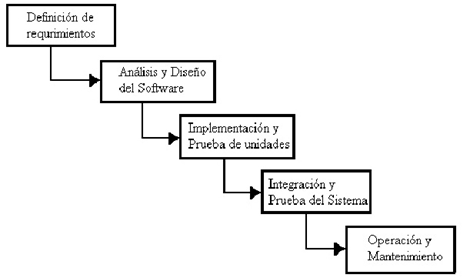

¿Que es?
También conocido como modelo clásico, modelo tradicional o modelo lineal secuencial. El método de la cascada es considerado como el enfoque clásico para el ciclo de vida del desarrollo de sistemas, se puede decir que es un método puro que implica un desarrollo rígido y lineal.
Fases
Fases de la Metodología en Cascada:
- Análisis de Requisitos
- Diseño
- Diseño
- Diseño
- Instalación y Mantenimiento
1. Análisis de Requisitos
En esta fase se hace un análisis de las necesidades del cliente para determinar las características del software a desarrollar, y se especifica todo lo que debe hacer el sistema sin entrar en detalles técnicos. Hay que ser especialmente cuidadoso en esta primera fase, ya que en este modelo no se pueden añadir nuevos requisitos en mitad del proceso de desarrollo. Por lo tanto, esta es la etapa en la que se lleva a cabo una descripción de los requisitos del software, y se acuerda entre el cliente y la empresa desarrolladora lo que el producto deberá hacer. Disponer de una especificación de los requisitos permite estimar de forma rigurosa las necesidades del software antes de su diseño. Además, permite tener una base a partir de la cual estimar el coste del producto, los riesgos y los plazos. En el documento en el que se especifican los requisitos, se establece una lista de los requerimientos acordados. Los desarrolladores deben comprender de forma clara el producto que van a desarrollar. Esto se consigue teniendo una lista detallada de los requisitos, y con una comunicación fluida con el cliente hasta que termine el el tiempo de desarrollo.
2. Diseño
En esta etapa se describe la estructura interna del software, y las relaciones entre las entidades que lo componen. Descompone y organiza el sistema en elementos que puedan elaborarse por separado, aprovechando las ventajas del desarrollo en equipo. Como resultado surge el SDD (Documento de Diseño del Software), que contiene la descripción de la estructura relacional global del sistema y la especificación de lo que debe hacer cada una de sus partes, así como la manera en que se combinan unas con otras. Es conveniente distinguir entre diseño de alto nivel o arquitectónico y diseño detallado. El primero de ellos tiene como objetivo definir la estructura de la solución (una vez que la fase de análisis ha descrito el problema) identificando grandes módulos (conjuntos de funciones que van a estar asociadas) y sus relaciones. Con ello se define la arquitectura de la solución elegida.
3. Implementación
En esta fase se programan los requisitos especificados haciendo uso de las estructuras de datos diseñadas en la fase anterior. La programación es el proceso que lleva de la formulación de un problema de computación, a un programa que se ejecute produciendo los pasos necesarios para resolver dicho problema. Al programar, tenemos que realizar actividades como el análisis de las condiciones, la creación de algoritmos, y la implementación de éstos en un lenguaje de programación específico.
4. Verificación
Como su propio nombre indica, una vez se termina la fase de implementación se verifica que todos los componentes del sistema funcionen correctamente y cumplen con los requisitos. El objetivo de las pruebas es el de obtener información de la calidad del software, y sirven para: encontrar defectos o bugs, aumentar la calidad del software, refinar el código previamente escrito sin miedo a romperlo o introducir nuevos bugs, etc.
5. Instalación y Mantenimiento
Una vez se han desarrollado todas las funcionalidades del software y se ha comprobado que funcionan correctamente, se inicia la fase de instalación y mantenimiento. Se instala la aplicación en el sistema y se comprueba que funcione correctamente en el entorno en que se va a utilizar. A partir de ahora hay que asegurarse de que el software funcione y hay que destinar recursos a mantenerlo. El mantenimiento del software consiste en la modificación del producto después de haber sido entregado al cliente, ya sea para corregir errores o para mejorar el rendimiento o las características.
El Modelo
Modelo en Cascada Puro/Secuencial
Cada una de las tareas se evalúa por separado y de igual manera el equipo que lo desarrolla es diferente. Para decidir implantar la metodología en cascada se necesita hacer un análisis de la situación, por ejemplo: si el cliente quiere intervenir en el proceso una vez iniciado, este método no sería el indicado, sino un método iterativo. Para proceder al diseño primero hay que determinar la especificación de requisitos los cuales no pueden ser modificados tras el cierre de sesión. Una modificación o cambio mediante la ejecución de alguna de las fases, implicaría reiniciar desde el principio todo el ciclo completo, esto implicaría mayor inversión de tiempo y desarrollo. Asegurarse en el inicio de que las necesidades y el diseño son los correctos nos ahorrara tiempo y esfuerzo. El modelo en cascada proporciona un enfoque estructurado, progresa linealmente a través de sus fases por lo que resulta fácil de entender. El proceso de desarrollo en cascada se lo realiza frecuentemente en los proyectos de gobierno y en proyectos que requieran poca innovación. Algunas de las variantes del modelo en cascada son más utilizadas debido a su simplicidad y eficacia en software de pequeño y mediano porte.
Estas variantes producen alguna retroalimentación entre etapas, ofrece la oportunidad de realizar cambios o evoluciones durante el ciclo de vida del software, permitiendo retroceder de una etapa a la anterior o incluso poder saltar a otras anteriores si es requerido.
Modelo en Cascada realimentado para el ciclo de vida.
La metodología en cascada es esencialmente:
- El inicio y el alcance del proyecto.
- La planificación del proyecto (calendario, recursos necesarios, costo).
- Definición de las necesidades del negocio y el análisis en detalle de la solución.
- La creación de la solución.
- Prueba que la solución funciona.
- La entrega de la solución a su público objetivo.
- Cierre del proyecto.
Ventajas
- Permite la departamentalización y control de gestión.
- El horario se establece con los plazos normalmente adecuados para cada etapa de desarrollo.
- Este proceso conduce a entregar el proyecto a tiempo.
- Es sencilla y facilita la gestión de proyectos.
- Permite tener bajo control el proyecto.
- Limita la cantidad de interacción entre equipos que se produce durante el desarrollo
Desventajas
- No conocer si la solución es correcta hasta estar cerca de su lanzamiento.
- Poco tiempo para corregir fallas.
- Depuración complicada.
- Los cambios introducidos durante el desarrollo pueden confundir al equipo profesional en las etapas tempranas del proyecto.
- No es frecuente que el cliente o usuario final explicite clara y completamente los requisitos.
- Es necesaria la paciencia del cliente.
- El cliente podría detectar un error.
- El proceso es lento y pesado.